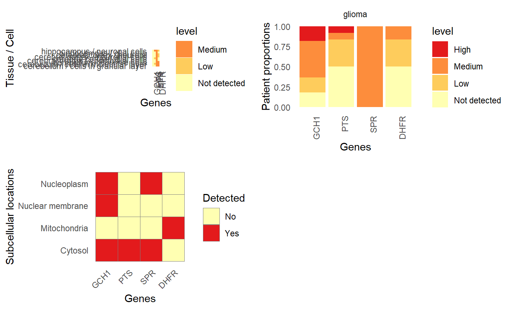
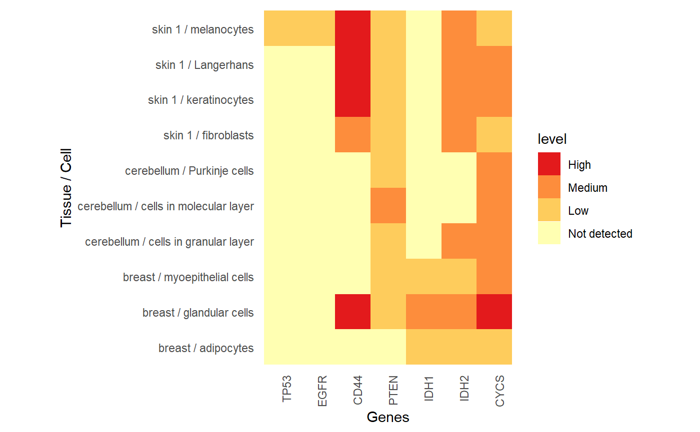
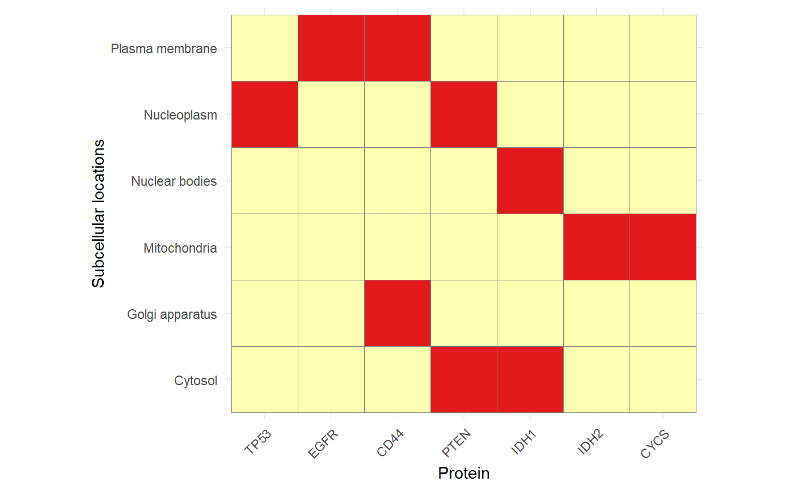

2. In-depth: Working with Human Protein Atlas (HPA) data in R with HPAanalyze
Anh N. Tran
DataGrata LLCtrannhatanh89@gmail.com
4/2/2021
Source:vignettes/b_HPAanalyze_indepth.Rmd
b_HPAanalyze_indepth.RmdSummary
- Background: The Human Protein Atlas program aims to map human proteins via multiple technologies including imaging, proteomics and transcriptomics.
-
Results:
HPAanalyzeis an R package for retreiving and performing exploratory data analysis from HPA. It provides functionality for importing data tables and xml files from HPA, exporting and visualizing data, as well as download all staining images of interest. The package is free, open source, and available via Github. -
Conclusions:
HPAanalyzeintergrates into the R workflow via thetidyversephilosophy and data structures, and can be used in combination with Bioconductor packages for easy analysis of HPA data.
Keywords: Human Protein Atlas, Proteomics, Homo Sapiens, Visualization, Software
Background
The Human Protein Atlas (HPA) is a comprehensive resource for exploration of human proteome which contains a vast amount of proteomics and transcriptomics data generated from antibody-based tissue micro-array profiling and RNA deep-sequencing.
The program has generated protein expression profiles in human normal tissues with cell type-specific expression patterns, cancer and cell lines via an innovative immunohistochemistry-based approach. These profiles are accompanied by a large collection of high quality histological staining images, annotated with clinical data and quantification. The database also includes classification of protein into both functional classes (such as transcription factors or kinases) and project-related classes (such as candidate genes for cancer). Starting from version 4.0, the HPA includes subcellular location profiles generated based on confocal images of immunofluorescent stained cells. Together, these data provide a detailed picture of protein expression in human cells and tissues, facilitating tissue-based diagnostic and research.
Data from the HPA are freely available via proteinatlas.org, allowing scientists to access and incorporate the data into their research. Previously, the R package hpar has been created for fast and easy programmatic access of HPA data. Here, we introduce HPAanalyze, an R package aims to simplify exploratory data analysis from those data, as well as provide other complementary functionality to hpar.
The different HPA data formats
The Human Protein Atlas project provides data via two main mechanisms: Full datasets in the form of downloadable compressed tab-separated files (.tsv) and individual entries in XML, RDF and TSV formats. The full downloadable datasets includes normal tissue, pathology (cancer), subcellular location and RNA expression data. For individual entries, the XML format is the most comprehensive, providing information on the target protein, antibodies, summary for each tissue and detailed data from each sample including clinical data, IHC scoring and image download links.
HPAanalyze overview
HPAanalyze is designed to fullfill 3 main tasks: (1)
Import, subsetting and export downloadable datasets; (2) Visualization
of downloadable datasets for exploratory analysis; and (3) Working with
the individual XML files. This package aims to serve researchers with
little programming experience, but also allow power users to use the
imported data as desired.

HPAanalyze workflow.
Obtaining HPAanalyze
The stable version of HPAanalyze should be downloaded from Bioconductor:
if (!requireNamespace("BiocManager", quietly = TRUE))
install.packages("BiocManager")
BiocManager::install("HPAanalyze")The development version of HPAanalyze is available on Github can be installed with:
devtools::install_github("anhtr/HPAanalyze")Please cite: Tran AN, Dussaq AM, Kennell T, Willey C, Hjelmeland A. HPAanalyze: An R Package that Facilitates the Retrieval and Analysis of The Human Protein Atlas Data. bioRxiv 355032; doi: https://doi.org/10.1101/355032
Full dataset import, subsetting and export
The hpaDownload() function downloads full datasets from
HPA (specifically, the .tsv format described above) and imports
them into R as a list of tibbles, the standard object of
tidyverse, which can subsequently be subset with
hpaSubset() and export into .xlsx files with
hpaExport(). The standard object allow the imported data to
be further processed in a traditional R workflow. The ability to quickly
subset and export data gives researchers the option to use other non-R
downstream tools, such as GraphPad for creating publication-quality
graphics, or share a subset of data containing only proteins of
interest.
You can skip this whole section if you only care about visualization, unless you need a specific version of the HPA datasets, or the RNA expression datasets.
Download and import data with hpaDownload()
This function should be the first thing you use. It give you a list of data frames containing the datasets you specified, which you can then feed into other functions in this package.
# This should give you the latest of everything, but unless you have a lot of RAM and processing power, I would not recomend it.
downloadedData <- hpaDownload(downloadList='all')
summary(downloadedData)
#> Length Class Mode
#> normal_tissue 6 tbl_df list
#> pathology 11 tbl_df list
#> subcellular_location 14 tbl_df list
#> ...The “histology” datasets
Most of the time, you will only need the “histology” datasets, which
contain normal_tissue, pathology (basically
cancers) and subcellular_location.
downloadedData <- hpaDownload(downloadList='histology', version='example')
# version = "example" will load the built-in dataset. That's sufficient for normal usage, and save you some time.The normal_tissue dataset contains information about
protein expression profiles in human tissues based on IHC staining. The
datasets contain six columns: ensembl (Ensembl gene
identifier); gene (HGNC symbol), tissue
(tissue name); cell_type (annotated cell type);
level (expression value); reliability (the
gene reliability of the expression value).
tibble::glimpse(downloadedData$normal_tissue, give.attr=FALSE)
#> Rows: 1,193,218
#> Columns: 6
#> $ ensembl <chr> "ENSG00000000003", "ENSG00000000003", "ENSG00000000003", "~
#> $ gene <chr> "TSPAN6", "TSPAN6", "TSPAN6", "TSPAN6", "TSPAN6", "TSPAN6"~
#> $ tissue <chr> "adipose tissue", "adrenal gland", "appendix", "appendix",~
#> $ cell_type <chr> "adipocytes", "glandular cells", "glandular cells", "lymph~
#> $ level <chr> "Not detected", "Not detected", "Medium", "Not detected", ~
#> $ reliability <chr> "Approved", "Approved", "Approved", "Approved", "Approved"~The pathology dataset contains information about protein
expression profiles in human tumor tissue based on IHC staining. The
datasets contain eleven columns: ensembl (Ensembl gene
identifier); gene (HGNC symbol); cancer
(cancer type); high, medium, low,
not_detected (number of patients annotated for different
staining levels); prognostic_favorable,
unprognostic_favorable,
prognostic_unfavorable,
unprognostic_unfavorable (log-rank p values for patient
survival and mRNA correlation).
tibble::glimpse(downloadedData$pathology, give.attr=FALSE)
#> Rows: 401,800
#> Columns: 11
#> $ ensembl <chr> "ENSG00000000003", "ENSG00000000003", "ENSG00~
#> $ gene <chr> "TSPAN6", "TSPAN6", "TSPAN6", "TSPAN6", "TSPA~
#> $ cancer <chr> "breast cancer", "carcinoid", "cervical cance~
#> $ high <int> 1, 0, 11, 0, 10, 0, 0, 4, 8, 0, 0, 8, 11, 5, ~
#> $ medium <int> 7, 1, 1, 6, 2, 0, 3, 5, 4, 0, 1, 3, 1, 6, 4, ~
#> $ low <int> 2, 1, 0, 2, 0, 0, 1, 1, 0, 0, 2, 0, 0, 0, 1, ~
#> $ not_detected <int> 2, 2, 0, 2, 0, 11, 0, 0, 0, 11, 9, 0, 0, 0, 5~
#> $ prognostic_favorable <chr> NA, NA, NA, NA, NA, NA, NA, NA, NA, NA, NA, N~
#> $ unprognostic_favorable <chr> "7.712e-2", NA, "8.967e-2", "3.562e-2", NA, "~
#> $ prognostic_unfavorable <chr> NA, NA, NA, NA, NA, NA, NA, NA, NA, NA, NA, N~
#> $ unprognostic_unfavorable <chr> NA, NA, NA, NA, "2.567e-1", NA, "5.932e-2", N~The subcellular_location dataset contains information
about subcellular localization of proteins based on IF stanings of
normal cells. The datasets contain eleven columns: ensembl
(Ensembl gene identifier); gene (HGNC symbol);
reliability (gene reliability score); enhanced
(enhanced locations); supported (supported locations);
approved (approved locations); uncertain
(uncertain locations); single_cell_var_intensity (locations
with single-cell variation in intensity);
single_cell_var_spatial (locations with spatial single-cell
variation); cell_cycle_dependency (locations with observed
cell cycle dependency); go_id (Gene Ontology Cellular
Component term identifier).
tibble::glimpse(downloadedData$subcellular_location, give.attr=FALSE)
#> Rows: 13,041
#> Columns: 14
#> $ ensembl <chr> "ENSG00000000003", "ENSG00000000457", "ENSG0~
#> $ gene <chr> "TSPAN6", "SCYL3", "C1orf112", "FGR", "CFH",~
#> $ reliability <chr> "Approved", "Uncertain", "Approved", "Approv~
#> $ main_location <chr> "Cell Junctions;Cytosol", "Microtubules", "M~
#> $ additional_location <chr> "Nucleoli fibrillar center", "Nuclear bodies~
#> $ extracellular_location <chr> NA, NA, NA, NA, "Predicted to be secreted", ~
#> $ enhanced <chr> NA, NA, NA, NA, NA, NA, NA, NA, NA, NA, NA, ~
#> $ supported <chr> NA, NA, NA, NA, NA, NA, "Nucleoplasm", NA, N~
#> $ approved <chr> "Cell Junctions;Cytosol;Nucleoli fibrillar c~
#> $ uncertain <chr> NA, "Microtubules;Nuclear bodies", NA, NA, N~
#> $ single_cell_var_intensity <chr> "Cytosol", NA, NA, NA, NA, "Cytosol;Nucleopl~
#> $ single_cell_var_spatial <chr> NA, NA, NA, NA, NA, NA, NA, NA, NA, NA, NA, ~
#> $ cell_cycle_dependency <chr> NA, NA, NA, NA, NA, NA, NA, NA, NA, NA, NA, ~
#> $ go_id <chr> "Cell Junctions (GO:0030054);Cytosol (GO:000~The RNA datasets
HPA provide a large number of RNA expression datasets. More details
can be find at https://www.proteinatlas.org/about/download. To see how
to download these datasets, please see the help page for
hpaDownload:
?hpaDownloadThere are shortcuts to download multiple RNA datasets, for example:
downloadedData <- hpaDownload(downloadList='rna tissue')
tibble::glimpse(downloadedData, give.attr=FALSE)
#> List of 4
#> $ rna_tissue_consensus: tibble [1,180,464 x 4] (S3: tbl_df/tbl/data.frame)
#> ..$ ensembl: chr [1:1180464] "ENSG00000000003" "ENSG00000000003" "ENSG00000000003" "ENSG00000000003" ...
#> ..$ gene : chr [1:1180464] "TSPAN6" "TSPAN6" "TSPAN6" "TSPAN6" ...
#> ..$ tissue : chr [1:1180464] "adipose tissue" "adrenal gland" "amygdala" "appendix" ...
#> ..$ nx : chr [1:1180464] "27.0" "9.8" "7.0" "4.4" ...
#> $ rna_tissue_hpa : tibble [845,810 x 6] (S3: tbl_df/tbl/data.frame)
#> ..$ ensembl: chr [1:845810] "ENSG00000000003" "ENSG00000000003" "ENSG00000000003" "ENSG00000000003" ...
#> ..$ gene : chr [1:845810] "TSPAN6" "TSPAN6" "TSPAN6" "TSPAN6" ...
#> ..$ tissue : chr [1:845810] "adipose tissue" "adrenal gland" "appendix" "B-cells" ...
#> ..$ tpm : chr [1:845810] "31.5" "26.4" "9.2" "0.1" ...
#> ..$ ptpm : chr [1:845810] "37.7" "32.7" "14.5" "0.2" ...
#> ..$ nx : chr [1:845810] "9.8" "7.6" "2.1" "0.3" ...
#> $ rna_tissue_gtex : tibble [639,744 x 6] (S3: tbl_df/tbl/data.frame)
#> ..$ ensembl: chr [1:639744] "ENSG00000000003" "ENSG00000000003" "ENSG00000000003" "ENSG00000000003" ...
#> ..$ gene : chr [1:639744] "TSPAN6" "TSPAN6" "TSPAN6" "TSPAN6" ...
#> ..$ tissue : chr [1:639744] "adipose tissue" "adrenal gland" "amygdala" "basal ganglia" ...
#> ..$ tpm : chr [1:639744] "27.4" "15.5" "7.3" "7.7" ...
#> ..$ ptpm : chr [1:639744] "34.2" "18.8" "9.0" "9.4" ...
#> ..$ nx : chr [1:639744] "13.4" "9.8" "7.0" "6.6" ...
#> $ rna_tissue_fantom : tibble [797,265 x 6] (S3: tbl_df/tbl/data.frame)
#> ..$ ensembl : chr [1:797265] "ENSG00000000003" "ENSG00000000003" "ENSG00000000003" "ENSG00000000003" ...
#> ..$ gene : chr [1:797265] "TSPAN6" "TSPAN6" "TSPAN6" "TSPAN6" ...
#> ..$ tissue : chr [1:797265] "adipose tissue" "amygdala" "appendix" "basal ganglia" ...
#> ..$ tags_per_million : chr [1:797265] "60.1" "10.7" "13.5" "16.2" ...
#> ..$ scaled_tags_per_million: chr [1:797265] "87.4" "12.4" "17.8" "18.0" ...
#> ..$ nx : chr [1:797265] "27.0" "3.5" "4.4" "5.5" ...List available parameter for subsetting with
hpaListParam()
To see what parameters are available for subsequent
subsetting/visualizing, HPAanalyze includes the function
hpaListParam(). The input for this function is the output
of hpaDownload.
If you leave the argument blank, this function will give you the results for the built-in datasets.
## If you use the output from hpaDownload()
downloadedData <- hpaDownload(downloadList=c("Normal tissue", "Pathology", "RNA HPA tissue", "RNA HPA cell line"))
str(hpaListParam(downloadedData))
# List of 4
# $ normal_tissue :List of 2
# ..$ tissue : chr [1:63] "adipose tissue" "adrenal gland" "appendix" "bone marrow" ...
# ..$ cell_type: chr [1:120] "adipocytes" "glandular cells" "lymphoid tissue" "hematopoietic cells" ...
# $ pathology :List of 1
# ..$ cancer: chr [1:20] "breast cancer" "carcinoid" "cervical cancer" "colorectal cancer" ...
# $ rna_tissue_hpa:List of 1
# ..$ tissue: chr [1:43] "adipose tissue" "adrenal gland" "appendix" "B-cells" ...
# $ rna_celline :List of 1
# ..$ cell_line: chr [1:69] "A-431" "A549" "AF22" "AN3-CA" ...Subset data with hpaSubset()
hpaSubset() filters the output of
hpaDownload() for desirable target genes, tissues, cell
types, cancer, and cell lines. The data will be subset only where
applicable (i.e. normal_tissue will not be subset by
cancer). The main purpose of hpaSubset is to
prepare a manageable set of data to be exported. However, this function
may also be useful for other data table manipulation purposes. The input
for targetGene argument is a vector of strings of HGNC
symbols.
If you leave the data argument blank, this function
will automatically subset the built-in dataset, which may not contain
all of the columns available if you download the data with
hpaDownload().
downloadedData <- hpaDownload(downloadList='histology', version='example')
sapply(downloadedData, nrow)
#> normal_tissue pathology subcellular_location
#> 1193218 401800 13041
geneList <- c('TP53', 'EGFR', 'CD44', 'PTEN', 'IDH1', 'IDH2', 'CYCS')
tissueList <- c('breast', 'cerebellum', 'skin 1')
cancerList <- c('breast cancer', 'glioma', 'melanoma')
cellLineList <- c('A-431', 'A549', 'AF22', 'AN3-CA')
subsetData <- hpaSubset(data=downloadedData,
targetGene=geneList,
targetTissue=tissueList,
targetCancer=cancerList,
targetCellLine=cellLineList)
sapply(subsetData, nrow)
#> normal_tissue pathology subcellular_location
#> 126 21 7Export data with hpaExport()
As the name suggests, hpaExport() exports the output of
hpaSubset() to one .xlsx file, or multiple .csv or .tsv
files. Each dataset is placed in a separate sheet.
hpaExport(subsetData, fileName='subset.xlsx', fileType='xlsx')Visualization
HPAanalyze provides the ability to quickly visualize
data from downloaded HPA datasets with the hpaVis function
family. The goal of these functions is to aid exploratory analysis of a
group of target genes, which maybe particularly useful for gaining
insights into pathways or gene signatures of interest.
The hpaVis functions share a common syntax, where the
input (data argument) is the output of
hpaDownload() or hpaSubset() (although they do
their own subseting so it is not necessary to use
hpaSubset() unless you want to reduce the size of your data
object). Depending on the function, the target arguments
will let you choose to visualize your vectors of genes, tissue, cell
types, etc. (See the help files for more details.) All of
hpaVis functions generate standard ggplot2
plots, which allow you to further customize colors and themes. Colors
maybe changed via the color argument, while the default
theme maybe overriden by setting the customTheme argument
to FALSE.
Currently, the normal_tissue, pathology and
subcellular_location data can be visualized, with more
functions planned for future releases.
For all functions in the hpaVis family, if you leave
the data argument blank, they will plot the built-in
datasets by default.
Unbrella function hpaVis()
hpaVis will plot all available plots by default. See the
quick-start vignette for details.
hpaVis(downloadedData,
targetGene = c("GCH1", "PTS", "SPR", "DHFR"),
targetTissue = c("cerebellum", "cerebral cortex", "hippocampus"),
targetCancer = c("glioma"))
Visualize tissue data with hpaVisTissue()
hpaVisTissue() generates a “heatmap”, in which the
expression of proteins of interest (quantified IHC staining) are plotted
for each cell type of each tissue.
geneList <- c('TP53', 'EGFR', 'CD44', 'PTEN', 'IDH1', 'IDH2', 'CYCS')
tissueList <- c('breast', 'cerebellum', 'skin 1')
hpaVisTissue(downloadedData,
targetGene=geneList,
targetTissue=tissueList)
Visualize expression in cancer with hpaVisPatho()
hpaVisPatho() generates an arrays of column graphs
showing the expression of proteins of interest in each cancer.
This example also demonstrate how the colors of the graphs could be
customized, which is a common functionality of the hpaVis
family.
geneList <- c('TP53', 'EGFR', 'CD44', 'PTEN', 'IDH1', 'IDH2', 'CYCS')
cancerList <- c('breast cancer', 'glioma', 'lymphoma', 'prostate cancer')
colorGray <- c('slategray1', 'slategray2', 'slategray3', 'slategray4')
hpaVisPatho(downloadedData,
targetGene=geneList,
targetCancer=cancerList,
color=colorGray)Visualize subcellular location data with
hpaVisSubcell()
hpaVisSubcell() generates a tile chart showing the
subcellular locations (approved and supported) of proteins of
interest.
This example also demonstrate the customization of the output plot
with ggplot2 functions, which is applicable to all hpaVis
functions. Notice that the customTheme argument is set to
TRUE.
geneList <- c('TP53', 'EGFR', 'CD44', 'PTEN', 'IDH1', 'IDH2', 'CYCS')
hpaVisSubcell(downloadedData,
targetGene=geneList,
customTheme=TRUE) +
ggplot2::theme_minimal() +
ggplot2::ylab('Subcellular locations') +
ggplot2::xlab('Protein') +
ggplot2::theme(axis.text.x=element_text(angle=45, hjust=1)) +
ggplot2::theme(legend.position="none") +
ggplot2::coord_equal()
Individual xml import and image downloading
The hpaXml function family import and extract data from
individual XML entries from HPA. The hpaXmlGet() function
downloads and imports data as “xml_document”/“xml_node” object, which
can subsequently be processed by other hpaXml functions.
The XML format from HPA contains a wealth of information that may not be
covered by this package. However, users can extract any data of interest
from the imported XML file using the xml2 package.
A typical workflow for working with XML files includes the following
steps: (1) Download and import XML file with hpaXmlGet();
(2) Extract the desired information with other hpaXml
functions; and (3) Download histological staining pictures, which is
currently supported by the hpaXmlTissurExpr() and
hpaXmlTissueExprSum() functions.
The umbrella function hpaXml
hpaXml will take an Ensembl gene id (start with
ENSG) and extract all availble information. You can also feed
the ourput of hpaXmlGet to it. See the quick-start vignette for more
details.
Import xml file with hpaXmlGet()
The hoaXmlGet() function takes an Ensembl gene id (start
with ENSG) and import the perspective XML file into R. This
function calls the xml2::read_xml() under the hood, hence
the resulting object may be processed further with xml2
functions if desired.
EGFRxml <- hpaXmlGet('ENSG00000146648')View protein classes with hpaXmlProtClass()
Protein class of queried protein can be extracted from the imported
XML with hpaXmlProtClass(). The output of this function is
a tibble of 4 columns: id, name,
parent_id and source
hpaXmlProtClass(EGFRxml)
#> # A tibble: 40 x 4
#> id name parent_id source
#> <chr> <chr> <chr> <chr>
#> 1 Ez Enzymes <NA> <NA>
#> 2 Ec ENZYME proteins Ez ENZYME
#> 3 Et Transferases Ec ENZYME
#> 4 Ki Kinases Ez UniProt
#> 5 Kt Tyr protein kinases Ki UniProt
#> 6 Ma Predicted membrane proteins <NA> MDM
#> 7 Md Membrane proteins predicted by MDM <NA> MDM
#> 8 Me MEMSAT3 predicted membrane proteins <NA> MEMSAT3
#> 9 Mf MEMSAT-SVM predicted membrane proteins <NA> MEMSAT-SVM
#> 10 Mg Phobius predicted membrane proteins <NA> Phobius
#> # ... with 30 more rowsGet summary and images of tissue expression with
hpaXmlTissueExprSum()
The function hpaXmlTissueExprSum() extract the summary
of expression of protein of interest in normal tissue. The output of
this function is a list of (1) a string contains one-sentence summary
and (2) a dataframe of all tissues in which the protein was stained
positive and a histological stain images of those tissue.
hpaXmlTissueExprSum(EGFRxml)
#> $summary
#> [1] "Cytoplasmic and membranous expression in several tissues, most abundant in placenta."
#>
#> $img
#> tissue
#> 1 cerebral cortex
#> 2 lymph node
#> 3 liver
#> 4 colon
#> 5 kidney
#> 6 testis
#> 7 placenta
#> imageUrl
#> 1 http://v18.proteinatlas.org/images/18530/41191_B_7_5_rna_selected.jpg
#> 2 http://v18.proteinatlas.org/images/18530/41191_A_7_8_rna_selected.jpg
#> 3 http://v18.proteinatlas.org/images/18530/41191_A_7_4_rna_selected.jpg
#> 4 http://v18.proteinatlas.org/images/18530/41191_A_9_3_rna_selected.jpg
#> 5 http://v18.proteinatlas.org/images/18530/41191_A_9_5_rna_selected.jpg
#> 6 http://v18.proteinatlas.org/images/18530/41191_A_6_6_rna_selected.jpg
#> 7 http://v18.proteinatlas.org/images/18530/41191_A_1_7_rna_selected.jpgThose images can be downloaded automatically by setting the
downloadImg argument to TRUE. Eg.
hpaXmlTissueExprSum(CCNB1xml, downloadImg=TRUE)
Get details of individual IHC samples with
hpaXmlAntibody() and hpaXmlTissueExpr()
More importantly, the XML files are the only format of HPA programmatically accesible data which contains information about each antibody and each tissue sample used in the project.
hpaXmlAntibody() extract the antibody information and
return a tibble with one row for each antibody.
hpaXmlAntibody(EGFRxml)
#> # A tibble: 5 x 4
#> id releaseDate releaseVersion RRID
#> <chr> <chr> <chr> <chr>
#> 1 CAB000035 2006-03-13 1.2 <NA>
#> 2 HPA001200 2008-02-15 3.1 AB_1078723
#> 3 HPA018530 2008-12-03 4.1 AB_1848044
#> 4 CAB068186 2014-11-06 13 AB_2665679
#> 5 CAB073534 2015-10-16 14 <NA>hpaXmlTissueExpr() extract information about all samples
for each antibody above and return a list of tibbles. If antibody has
not been used for IHC staining, the returned tibble with be empty.
tissueExpression <- hpaXmlTissueExpr(EGFRxml)
summary(tissueExpression)
#> Length Class Mode
#> [1,] 18 tbl_df list
#> [2,] 18 tbl_df list
#> [3,] 18 tbl_df list
#> [4,] 18 tbl_df list
#> [5,] 18 tbl_df listEach tibble contain clinical data (patientid,
age, sex), tissue information
(snomedCode, tissueDescription), staining
results (staining, intensity,
location) and one imageUrl for each sample.
However, due to the large amount of data and the relatively large size
of each image, hpaXmlTissueExpr does not provide an
automated download option.
tissueExpression[[1]]
#> # A tibble: 327 x 18
#> patientId age sex staining intensity quantity location imageUrl
#> <chr> <chr> <chr> <chr> <chr> <chr> <chr> <chr>
#> 1 1653 53 Male <NA> <NA> <NA> <NA> http://~
#> 2 1721 60 Fema~ <NA> <NA> <NA> <NA> http://~
#> 3 1725 57 Male <NA> <NA> <NA> <NA> http://~
#> 4 4 25 Male <NA> <NA> <NA> <NA> http://~
#> 5 512 34 Fema~ <NA> <NA> <NA> <NA> http://~
#> 6 2664 74 Fema~ <NA> <NA> <NA> <NA> http://~
#> 7 2665 88 Fema~ <NA> <NA> <NA> <NA> http://~
#> 8 1391 54 Fema~ <NA> <NA> <NA> <NA> http://~
#> 9 1447 45 Fema~ <NA> <NA> <NA> <NA> http://~
#> 10 1452 44 Fema~ <NA> <NA> <NA> <NA> http://~
#> # ... with 317 more rows, and 10 more variables: snomedCode1 <chr>,
#> # snomedCode2 <chr>, snomedCode3 <chr>, snomedCode4 <chr>,
#> # snomedCode5 <chr>, tissueDescription1 <chr>, tissueDescription2 <chr>,
#> # tissueDescription3 <chr>, tissueDescription4 <chr>,
#> # tissueDescription5 <chr>hpaTissueExprSum and hpaTissueExpr provide
download links to download relevant staining images, with the former
function also gives the options to automate the downloading process.
Compatibility with hpar Bioconductor package
| Functionality | hpar | HPAanalyze |
|---|---|---|
| Datasets | Included in package | Download from server or use built-in dataset |
| Query | Ensembl id | HGNC symbol for datasets, Ensembl id for XML |
| Data version | One stable version | Latest by default, option to download older |
| Release info | Access via functions | N/A |
| View relevant browser page | Via getHPA function |
N/A |
| Visualization | N/A | Exploratory via hpaVis functions |
| XML | N/A | Download and import via hpaXml
functions |
| Histology image | View by loading browser page | Extract links via hpaXml functions |
Acknowledgements
We appreciate the support of the National institutes of Health National Cancer Institute R01 CA151522 and funds from the Department of Cell, Developmental and Integrative Biology at the University of Alabama at Birmingham.
Copyright
Anh Tran, 2018-2022
Please cite: Tran, A.N., Dussaq, A.M., Kennell, T. et al. HPAanalyze: an R package that facilitates the retrieval and analysis of the Human Protein Atlas data. BMC Bioinformatics 20, 463 (2019) https://doi.org/10.1186/s12859-019-3059-z